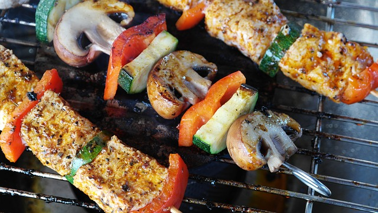

Taste some regional food

A charcuterie board is an appetizer typically served on a wooden board or stone slab, either eaten straight from the board itself or portioned onto flatware. It features a selection of preserved foods, especially cured meats or pâtés, as well as cheeses and crackers or bread.

This Salmon Florentine is perfect for a weeknight dinner. Tender, juicy, and flaky salmon with a delicious creamy spinach sauce. A healthy salmon that can be ready in just under 30 minutes.

Juicy entrecote steak in rich sauce served with fried potato slices. French dinner for two. And I truly believe this steak and potatoes is a hearty meal for any man! Red wine sauce steak with shallot is a simple and delicious beef recipe for dinner.
